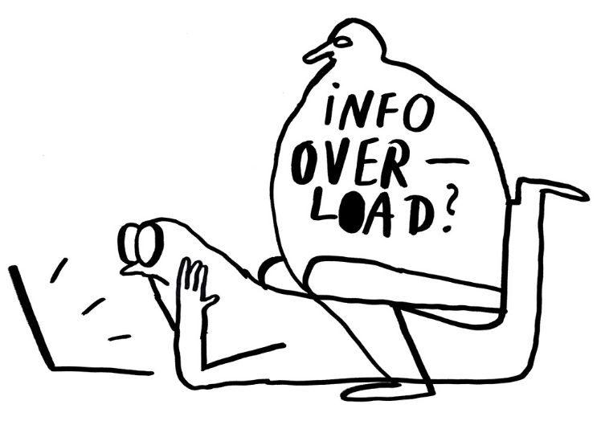

Erkunden
Vier Tipps, wie Du Informationen im Netz
für Dich einordnen und bewerten kannst.
Die Erkundungszeit für den gesamten Kurs beträgt ungefähr 30 Minuten. Du kannst dir aber auch deinen eigenen Weg suchen und dich eigenständig durchklicken:
Intro
- Bevor es losgeht

Die vier Tipps erklärt
- Tipp 1: Stopp
- Tipp 2: Quelle überprüfen
- Zu Tipp 2: der Wikipedia-Trick
- Tipp 3: Weitere Informationen recherchieren
- Tipp 4: Zurück zum Original
- Zu Tipp 4: Bilder-Rückwärtssuche
- Selbstüberprüfung zu den 4 Tipps
Beispiele und Übungen
- Beispiel 1: Das Redaktionsnetzwerk
- Reflexion zu Beispiel 1
- Beispiel 2: Deutsche EU-Ausgaben laut der Zivilen Koalition
- Reflexion zu Beispiel 2
- Beispiel 3: Kevin Kühnert und die GroKo
- Reflexion zu Beispiel 3